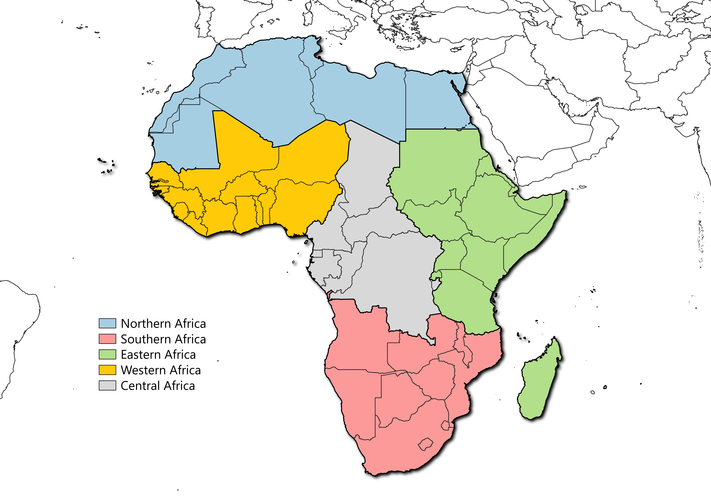

Scenarios overview
Six prospective scenarios have been constructed in this study to measure the potential tensions on African agricultural and food systems in 2050.
All present the same climatic, demographic and productivity assumptions (more informations in methodology).
Three of them: healthy diet, tendantial diet and same diet correspond to the continuation
of three different diets described in the Assumption tab. These three scenarios present the same assumptions regarding foreign trade :
- Import rates are kept constant by product and by country at the level of the model’s base year : 2018
- Export shares by country are held constant at the global level at base year level : 2018
This implies that in these scenarios, external trade does not play an adjustment role but is recomposed according to the structure of the food
consumption (composition and quantity). These three basic scenarios are always displayed in the application.
Then, three other scenarios derived from the "tendantial diet" where different additional constraints are applied :
- "No deforestation" : In this scenario, no forest area can be converted into agricultural area. This prevents the extension
of cultivated and pastured areas in case of increased food needs. In this case, the adjustment will be made through external trade (increase in imports, decrease in exports)
- "Total area stress" : In this scenario, agricultural areas cannot exceed the country’s available area.
If the food need cannot be covered by available land, adjustment would be made through external trade (increase in imports, decrease in exports)
- "Self-sufficiency" : This scenario implies that the majority of cereals and legumes are produced domestically. The maximum import rates
for these two categories of products are set at 20%. For countries that already import more than 20%, the maximum import rates are those of the base year: 2018.
You have the choice to display one of these three scenarios in addition to the three basic scenarios in the application via a selector in the top banner.
Scale of analysis
The prospective is carried out at the country scale, so you can consult the results of
45 African countries. The application also processes the results of 5 major regions
that make up the continent. These large regions were built on the basis of the geographical distribution regions
established by the African Union in certain international bodies. Leaving the official regional economic communities
of the African Union, the five regions correspond to :
- Northern Africa : UMA + Egypte
- Western Africa : ECOWAS
- Central Africa : ECCAS - Angola - Rwanda
- Eastern Africa : IGAD + Comoros + Eritrea + Madagascar + Mauritius + Rwanda + Seychelles + Tanzania
- Southern Africa : SADC - Comoros - DRC - Seychelles - Madagascar - Mauritius - Tanzania
These regions used in GlobAgri are illustrated on the map

If you have any questions about the model, scenarios, or results, please contact us.
We would also be happy to work with you on new GlobAgri scenarios !